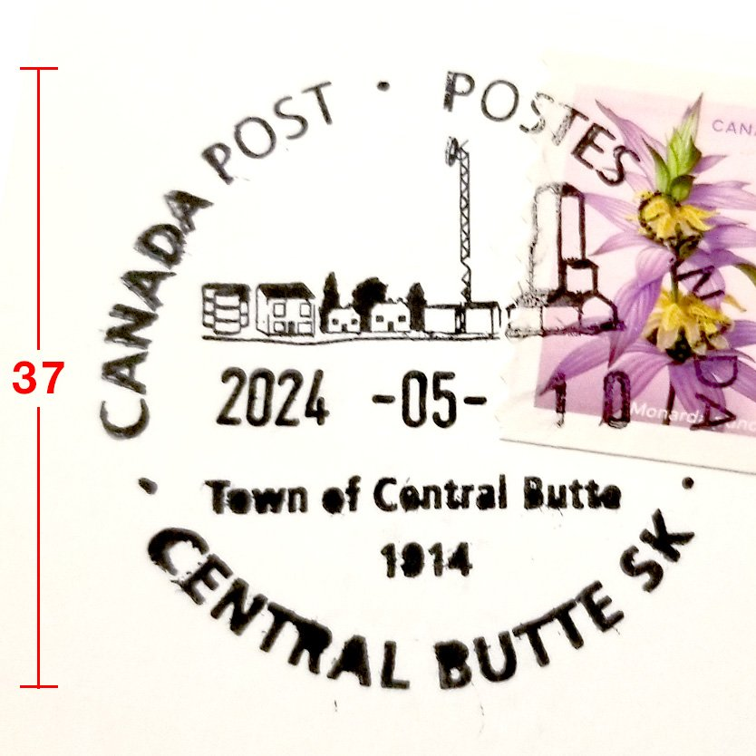

Central Butte PO pictorial cancel
Town of Central Butte – 1914
- Status
- Active
- Run dates
- 2021-01-01 to ?
- Design
- "Town of Central Butte / 1914"; townscape
- Ink colour
- Black
- Designer
- Unknown
- Post office
- Central Butte PO
32 - 2Nd Ave W
Central Butte, SK
S0H 0T0 - Subjects
- architecture, building, cityscape
Collect it by mail. Send your stamped covers, with a stamped return envelope, to the post office address above. How to collect pictorial cancels by mail · en français
 Caronport PO1942-1944 WWII Air Training Base
Caronport PO1942-1944 WWII Air Training Base Watrous POCBK Radio 1939
Watrous POCBK Radio 1939 Val Marie POGateway to Grasslands National Park / Portail du parc national des Prairies
Val Marie POGateway to Grasslands National Park / Portail du parc national des Prairies Englefeld POHome of the Hogfest
Englefeld POHome of the Hogfest